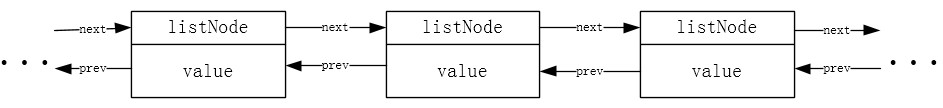
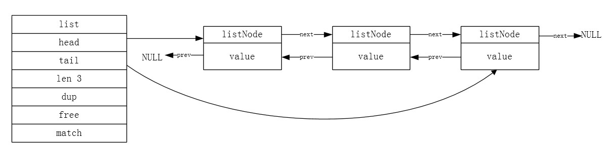

小喵的唠叨话：前面我们介绍了Redis的string的数据结构的原理和操作。当时我们提到Redis的键值对不仅仅是字符串。而这次我们就要介绍Redis的第二个数据结构了，List（链表）。由于List在原理上的实现并不是特别的复杂，我们在这里将原理和具体的命令都放在一起介绍。
Redis List 原理
学习过数据结构的同学，一定对链表（Linked List）十分的熟悉。相信我们自己也曾经使用过这种数据结构。
链表分为很多种：单向链表，双向链表，循环链表，块状链表等等。
链表的作用也有很多。首先，链表可以存放数据。其次链表可以模拟队列、堆栈等其他的数据结构。
链表的实现也有多种，以C语言为例，最常见的是构造节点node，node中又有指针，用于指向下一个node，这样就构成了单向链表，如果node中有两个指针，分别指向前一个和后一个node，则构造了双向链表，再如果链表是首尾相连的，那么就是循环链表。链表的具体算法，是数据结构里面的内容，我们这里就不专门介绍啦。
那么，Redis内部的List是什么样子的链表呢？又是怎么来维护的呢？
我们慢慢的剖析。
typedef struct listNode {
// 前置节点
struct listNode *prev;
// 后置节点
struct listNode *next;
// 节点的值
void *value;
} listNode;上述就是Redis的节点的定义。
可以看出，这是一个双向的链表。比较有意思的是，节点内存的值，是一个void *的指针，这就说明节点内部可以存放任何的内容。
反派汪：我不能理解为什么value是void 的指针就能存任何内容？我甚至不知道为什么还有要void 这么奇怪的数据类型。
喵太：其实很多人也有这个疑问。不过先问问你自己，指针到底是什么？int ，float 和char 的这几种指针有什么区别？
反派汪：指针里面存的就是地址，通过地址就能访问到指定的内存。以int 指针为例，int 说明，指针指向的是一个由int型的数据组成的内存。通过指针运算符，我们就能取到对应位置的内存中的值。通过对指针的+和-，我们就能移动到相邻的位置。
喵太：嗯，说的不错，但是你只说对了一半。指针里面存放的是地址，无论任何类型的指针，里面存放的都只是一个32位的无符号整数。指针的类型，其实只是决定了对内存进行的操作。int 的指针，每次加1的时候，其实移动了4个字节，char 则移动1个。使用指针运算符其实也是一样。int 会得到连续4个字节的内容，并且存进一个int变量里面，而char 则会得到一个字节的内容，并存进一个char里面。因此，任何类型的指针其实本质上是一样的。
反派汪：那你的意思是，所有类型的指针都是一样的了。那么我还是不能理解void 的指针究竟能做什么。
喵太：void 的指针是C语言中最简单的一种指针，它存放的是一个地址，并且没有给出任何操作上的提示。但是任何类型的指针都能赋给void 的指针。void 的指针也能强制转换成任何类型的指针。这里使用void 的指针，只是在说明，value对应的是一块内存。开发者，可以自行转换指针的类型，来做相应的操作。如果你熟悉C语言的话，malloc函数的返回值也是一个void 的指针，而我们通常会把它强制转换成我们需要的任何数据类型。
反派汪：这样啊，那原则上这里的指针用什么类型的都是可以的了？反正就是一个地址而已。只是void 更纯粹一点，也最符合要求，毕竟它只是指向数据的地址，没有做任何的限制。
喵太：孺狗可教也。
现在，我们有了listNode这个节点的数据结构，就可以构造我们的链表了。

依照上图的示意图，我们就可以使用listNode构造一个双向链表了。
Redis中，为了更好地管理链表，定义了一个list的数据结构，作为链表的封装。
typedef struct list {
// 头节点
listNode *head;
// 尾节点
listNode *tail;
// 链表中的节点数
unsigned int len;
// 节点值复制函数
void *(*dup) (void *ptr);
// 节点值释放函数
void (*free) (void *ptr);
// 节点值对比函数
int (*match) (void *ptr, void *key);
} list;list结构记录了链表的头指针，尾指针，链表的节点数。dup，free和match三个成员则表示对节点的值进行复制，释放和比较的函数。由于这里的节点的value的内容是任意的，复制和释放并不一定能用类似于memcpy和free的函数来处理（不太理解的话，可以google一下浅拷贝和深拷贝）。
因此，我们得到的最终的链表结构是这个样子的：

Redis的链表的实现的主要特性如下：
- 双端：链表节点都有prev和next指针，这样获取一个节点的前置节点和后置节点的算法复杂度都为O(1)。
- 无环：list的第一个节点（头节点）的prev和最后一个节点（尾节点）的next都指向NULL。
- 带表头指针和表尾指针：通过list的head和tail两个指针，可以随意的从链表的头和尾进行操作。
- 带链表长度计数器：可以通过len成员来获取链表的节点的个数，复杂度O(1)。
- 多态：链表使用void *指针来保存value，并且可以通过dup，free，match来操控节点的value值，因此，该链表可以保存任意类型的值。
小喵看到这个多态的实现也是惊呆了，原来C语言也能实现多态，也第一次知道了函数指针居然可以这么用。
由此想到之前看过的一句话：高手用树叶也能杀人。希望每个人都能成为传说中的高手~
关于链表的操作，是数据结构课程中的基础，无外乎是增、删、改、查这四个操作，这里不再介绍。聪明的你，bing一下就OK了！
Redis List 实战
现在，我们已经基本了解了Redis的List结构的底层实现。那么，Redis提供了哪些可以供我们调用的接口呢？请听小喵慢慢道来。
以下指令根据类别和使用的频率进行排序。
指令清单：
- BLPOP
- BRPOP
- BRPOPLPUSH
- LINDEX
- LINSERT
- LLEN
- LPOP
- LPUSH
- LPUSHX
- LRANGE
- LREM
- LSET
- LTRIM
- RPOP
- RPOPLPUSH
- RPUSH
- RPUSHX
一、PUSH操作
1，RPUSH key value [value ...]
从队列的右边入队一个元素或多个元素，复杂度O(1)。
将所有指定的值插入存于key的列表的尾部（从右侧插入）。如果key不存在，那么PUSH之前，会先自动创建一个空的列表。如果key对应的值不是一个list的话，则会返回一个错误。如果同时push多个值的话，值会依次从左到右PUSH从尾部进入list。
那么这个命令有什么作用呢？
作用大大滴！
PUSH和POP操作，其实是队列的基本操作。Redis的list就是一个极其强大的队列系统。我们在哪些地方会用到队列呢？下面，我们说两个例子：
a，评论系统
逛过微博的筒子们应该都对评论系统有了解。我们在看完一条微博之后，常常会评论一番，或者看看其他人的吐槽。每条评论的记录都是按照时间顺序排序的。我们读的时候也是这个顺序。这时，队列就是一个很好的存储结构。每提交一次评论，都向list的末尾添加一个新的节点。
当然，博客本身也可以是这样的结构。
b，并行转串行
我们做后台开发的筒子们应该都遇到过类似的情景。用户每时每刻都可能发出请求，而且请求的频率经常变化。这时，后台的程序不可能立刻响应每一个用户的请求，尤其是请求特别占资源的服务的时候（双11的时候，你有没有看到404页面？）。有什么好的办法来解决这个问题呢？我们需要一个排队系统。根据用户的请求时间，将用户的请求放入队列中，后台程序依次从队列中获取任务，处理并将结果返回到结果队列。
这其实也是一个生产者消费者模型。通过队列，我们将并行的请求转换成串行的任务队列，之后依次处理（当然后台的程序也可以多核并行处理）。
那么，这么强大的功能，我们不马上试试吗？
redis> rpush queue a
(integer) 1
redis> rpush queue b
(integer) 2
redis> rpush queue c
(integer) 3
redis> rpush queue d e f
(integer) 6
redis> lrange queue 0 -1
1) "a"
2) "b"
3) "c"
4) "d"
5) "e"
6) "f"lrange这个命令是获取指定范围的list中的数据，我们下面再具体介绍。
这个例子中，我们依次将a、b、c、d、e、f、g从尾部(右侧)追加到queue中，最后通过lrange查看queue中的数据的顺序。
2，LPUSH key value [value ...]
从队列的左边入队一个或多个元素，复杂度O(1)。
这个指令和RPUSH几乎一样，只是插入节点的方向相反了，是从list的头部(左侧)进行插入的。
redis> del queue
(integer) 1
redis> lpush queue a
(integer) 1
redis> lpush queue b
(integer) 2
redis> lpush queue c
(integer) 3
redis> lpush queue e f g
(integer) 6
redis> lrange queue 0 -1
1) "g"
2) "f"
3) "e"
4) "c"
5) "b"
6) "a"可以看出，结果正好和RPUSH相反。
3，RPUSHX key value
从队列的右边入队一个元素，仅队列存在时有效。当队列不存在时，不进行任何操作。
# 之前queue已经存在，且有a、b、c、d、e、f、g这6个元素
redis> rpushx queue z
(integer) 7
redis> del queue
(integer) 1
redis> rpushx queue z
(integer) 0可以看出，最开始rpushx向queue中新增了一个节点，但当我们删掉了queue时，再rpushx，就没有插入成功（返回值为0）。
4，LPUSHX key value
从队列的左边入队一个元素，仅队列存在时有效。当队列不存在时，不进行任何操作。
参考RPUSHX。
二、POP操作
PUSH操作，是从队列头部和尾部增加节点的操作。而POP是获取并删除头尾节点的操作。
1，LPOP key
从队列的左边出队一个元素，复杂度O(1)。如果list为空，则返回nil。
redis> del queue
(integer) 0
redis> rpush queue a b c d e f
(integer) 6
redis> lrange queue 0 -1
1) "a"
2) "b"
3) "c"
4) "d"
5) "e"
6) "f"
redis> lpop queue
"a"
redis> lpop queue
"b"
redis> lrange queue 0 -1
1) "c"
2) "d"
3) "e"
4) "f"
redis> rpop queue
"f"
redis> rpop queue
"e"
redis> lrange queue 0 -1
1) "c"
2) "d"我们首先向空的list中添加了a、b、c、d、e、f这6个值，之后从左边POP(LPOP)出两个值，再从右侧POP(RPOP)出两个值。
2，RPOP key
从队列的右边出队一个元素，复杂度O(1)。如果list为空，则返回nil。
见LPOP。
3，BLPOP key [key ...] timeout
删除，并获得该列表中的第一元素，或阻塞，直到有一个可用。
这是LPOP的阻塞版本。在LPOP的时候，如果队列中没有值，则会返回一个nil。而BLPOP则会等待一段时间，如果list中有值（等待的时候，被添加的），则返回对应值；如果在给定时间内仍没有得到结果，则返回nil。
redis> lrange queue 0 -1
1) "c"
2) "d"
redis> BLPOP queue 1
1) "queue"
2) "c"
redis> BLPOP queue 1
1) "queue"
2) "d"
redis> BLPOP queue 1
(nil)
(1.10s)
redis> LPOP queue
(nil)我们仍接着上面的实验继续，这时queue里面只有2个元素了，我们使用BLPOP取值，前两次都成功地得到了值，效果和LPOP一样。但第三次的时候，由于list已经为空，但是BLPOP并没有立刻返回nil，而是阻塞了一点时间(timeout的时间)，之后才返回了nil。最后，我们试验了一下LPOP，证实了LPOP是立刻返回结果的。
timeout表示等待的时间，单位是秒。当设为0时，表示永远阻塞，非0时，表示等待的最长时间。
要注意的是，LBPOP支持多个key，也就是说可以同时监听多个list，并按照key的顺序，依次检查list是否为空，如果不为空，则返回最优先的list中的值。如果都为空，则阻塞，直到有一个list不为空，那么返回这个list对应的值。这里进行试验不是特别的方便，更具体的介绍可以查看中文官网的文档：http://redis.cn/commands/blpop.html。
4，BRPOP key [key ...] timeout
删除，并获得该列表中的最后一个元素，或阻塞，直到有一个可用。
参考BLPOP。
三、POP and PUSH
1，RPOPLPUSH source destination
删除列表中的最后一个元素，将其追加到另一个列表。
这个命令可以原子性地返回并删除source对应的列表的最后一个元素（尾部元素），并将钙元素放入destination对应的列表的第一个元素位置（列表头部）。
redis> rpush q1 1 2 3 4 5
(integer) 5
redis> lrange q1 0 -1
1) "1"
2) "2"
3) "3"
4) "4"
5) "5"
redis> rpoplpush q1 q2
"5"
redis> rpoplpush q1 q2
"4"
redis> lrange q1 0 -1
1) "1"
2) "2"
3) "3"
redis> lrange q2 0 -1
1) "4"
2) "5"
redis>我们简单的看一下上述的例子，首先我们初始化一个q1，内容是{1, 2, 3, 4, 5}。这是q2没有定义，可以理解是一个空的list {}。
之后使用rpoplpush，从q1右边pop出一个元素5，然后在q2左侧push进。则现在的q1为{1, 2, 3, 4}，q2为{5}。
再进行一次rpoplpush，从q1右边pop出一个元素4，然后在q2左侧push进。则现在的q1为{1, 2, 3}，q2为{4, 5}。
那么，这个有意思的命令有什么实际的用处呢？
redis的官网给出了两个有意思的案例（因为写的很详细，所以直接照搬下来了）2：
模式：安全的队列
Redis通常都被用做一个处理各种后台工作或消息任务的消息服务器。一个简单的队列模式就是：生产者把消息放入一个列表中，等待消息的消费者用 RPOP 命令（用轮询方式），或者用 BRPOP 命令（如果客户端使用阻塞操作会更好）来得到这个消息。
然而，因为消息有可能会丢失，所以这种队列并是不安全的。例如，当接收到消息后，出现了网络问题或者消费者端崩溃了，那么这个消息就丢失了。
RPOPLPUSH (或者其阻塞版本的 BRPOPLPUSH）提供了一种方法来避免这个问题：消费者端取到消息的同时把该消息放入一个正在处理中的列表。 当消息被处理了之后，该命令会使用 LREM 命令来移除正在处理中列表中的对应消息。
另外，可以添加一个客户端来监控这个正在处理中列表，如果有某些消息已经在这个列表中存在很长时间了（即超过一定的处理时限），那么这个客户端会把这些超时消息重新加入到队列中。
模式：循环列表
RPOPLPUSH 命令的 source 和 destination 是相同的话，那么客户端在访问一个拥有n个元素的列表时，可以在 O(N) 时间里一个接一个获取列表元素，而不用像 LRANGE 那样需要把整个列表从服务器端传送到客户端。
上面这种模式即使在以下两种情况下照样能很好地工作：
- 有多个客户端同时对同一个列表进行旋转（rotating）：它们会取得不同的元素，直到列表里所有元素都被访问过，又从头开始这个操作。
- 有其他客户端在往列表末端加入新的元素。
这个模式让我们可以很容易地实现这样一个系统：有 N 个客户端，需要连续不断地对一批元素进行处理，而且处理的过程必须尽可能地快。 一个典型的例子就是服务器上的监控程序：它们需要在尽可能短的时间内，并行地检查一批网站，确保它们的可访问性。
值得注意的是，使用这个模式的客户端是易于扩展（scalable）且安全的（reliable），因为即使客户端把接收到的消息丢失了， 这个消息依然存在于队列中，等下次迭代到它的时候，由其他客户端进行处理。
2，BRPOPLPUSH source destination timeout
弹出一个列表的值，将它推到另一个列表，并返回它;或阻塞，直到有一个可用。
RPOPLPUSH的阻塞版本。timeout的单位是秒，当timeout为0的时候，表示无限期阻塞。
具体使用参考RPOPLPUSH。
四、其他
1，LLEN key
获得队列(List)的长度
和名字一样易懂，这里不再过多解释。
2，LRANGE key start stop
从列表中获取指定返回的元素
我们在前面用到了很多次。LRANGE可以获取list的指定范围的值。范围用start和stop表示。负数表示从右向左数。
需要注意的是，超出范围的下标不会产生错误：如果start>end，会得到空列表，如果end超过队尾，则Redis会将其当做列表的最后一个元素。
3，LINDEX key index
获取一个元素，通过其索引列表
我们之前介绍的操作都是对list的两端进行的，所以算法复杂度都只有O(1)。而这个操作是指定位置来进行的，每次操作，list都得找到对应的位置，因此算法复杂度为O(N)。list的下表是从0开始的，index为负的时候是从右向左数。-1表示最后一个元素。当下标超出的时候，会返回nul。所以不用像操作数组一样担心范围越界的情况。
redis> rpush q1 a b c d f e g
(integer) 7
redis> lrange q1 0 -1
1) "a"
2) "b"
3) "c"
4) "d"
5) "f"
6) "e"
7) "g"
redis> lindex q1 0
"a"
redis> lindex q1 3
"d"
redis> lindex q1 4
"f"
redis> lindex q1 -1
"g"
redis> lindex q1 100
(nil)4，LSET key index value
设置队列里面一个元素的值
这个操作和LINDEX类似，只不过LINDEX是读，而LSET是写。下标的用法和LINDX相同。不过当index越界的时候，这里会报异常。
redis> rpush q1 a b c d f e g
(integer) 7
redis> lrange q1 0 -1
1) "a"
2) "b"
3) "c"
4) "d"
5) "f"
6) "e"
7) "g"
redis> lset q1 0 1
OK
redis> lset q1 3 3
OK
redis> lset q1 -1 0
OK
redis> lset q1 100 0
(error) ERR index out of range
redis> lrange q1 0 -1
1) "1"
2) "b"
3) "c"
4) "3"
5) "f"
6) "e"
7) "0"5，LREM key count value
从列表中删除元素
该命令用于从key对应的list中，移除前count次出现 的值为value的元素。count参数有三种情况：
count > 0: 表示从头向尾（左到右）移除值为value的元素。
count < 0: 表示从尾向头（右向左）移除值为value的元素。
count = 0: 表示移除所有值为value的元素。
redis> rpush q 1 0 1 1 2 1 0 1 1
(integer) 9
redis> lrange q 0 -1
1) "1"
2) "0"
3) "1"
4) "1"
5) "2"
6) "1"
7) "0"
8) "1"
9) "1"
redis> lrem q 2 1
(integer) 2
redis> lrange q 0 -1
1) "0"
2) "1"
3) "2"
4) "1"
5) "0"
6) "1"
7) "1"
redis> lrem q -2 1
(integer) 2
redis> lrange q 0 -1
1) "0"
2) "1"
3) "2"
4) "1"
5) "0"
redis> lrem q 0 1
(integer) 2
redis> lrange q 0 -1
1) "0"
2) "2"
3) "0"6，LTRIM key start stop
修剪到指定范围内的清单
这个命令和LRANGE十分相似，LRANGE会将指定范围的元素返回给客户端，而LTRIM会对list进行修剪，使其只包含指定范围的元素。start和stop表示范围。
超出范围的下标不会产生错误：如果start>end，会得到空列表，如果end超过队尾，则Redis会将其当做列表的最后一个元素。
redis> rpush q a b c d e f g
(integer) 7
redis> lrange q 0 -1
1) "a"
2) "b"
3) "c"
4) "d"
5) "e"
6) "f"
7) "g"
redis> ltrim q 1 4
OK
redis> lrange q 0 -1
1) "b"
2) "c"
3) "d"
4) "e"7，LINSERT key BEFORE|AFTER pivot value
在列表中的另一个元素之前或之后插入一个元素
该命令将value插入值key对应的列表的基准值pivot的前面或是后面。
当key不存在时，这个list被视为空列表，任何操作都不会发生。
当key存在，但保存的不是list，则会报error。
该命令会返回修改之后的list的长度，如果找不到pivot，则会返回-1。
redis> rpush q a b c d e
(integer) 5
redis> lrange q 0 -1
1) "a"
2) "b"
3) "c"
4) "d"
5) "e"
redis> linsert q before c 0
(integer) 6
redis> linsert q after c 0
(integer) 7
redis> linsert q before 0 1
(integer) 8
redis> linsert q after 0 1
(integer) 9
redis> lrange q 0 -1
1) "a"
2) "b"
3) "1"
4) "0"
5) "1"
6) "c"
7) "0"
8) "d"
9) "e"
redis> linsert q after w 1
(integer) -1这里，我们构造了一个list{a, b, c, d, e}，先在c的前后插入了0，再在0前后插入了1。可以看出，linsert只会对第一个匹配pivot的前后进行操作。
最后，我们在w前面插入1，但是list中并没有w，所以返回了-1。
转载请注明出处。